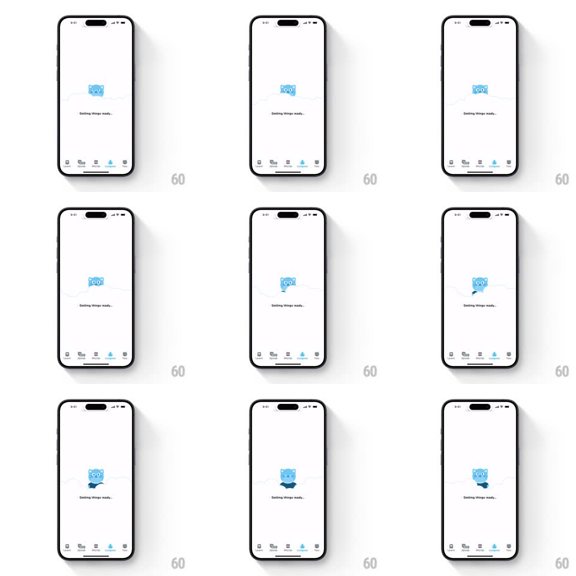

Media
Frame-by-frame

Rebuild this interaction 1:1: Airlearn's loading state - a blue cat mascot bobs up and down behind a cloud-shaped mask above a "Getting things ready..." label, over the app's tab bar.

Rebuild this interaction 1:1: Airlearn's loading state - a blue cat mascot bobs up and down behind a cloud-shaped mask above a "Getting things ready..." label, over the app's tab bar. ## Integration Integration: stack-agnostic spec - springs given as stiffness/damping, timed motions as duration + curve; map every value to your framework and animation library of choice. ## Scene Mobile screen, white background, mostly empty. Vertically centered: a light-blue cloud shape with the blue cat mascot peeking over its top edge. Below it, small gray text "Getting things ready...". The standard five-tab bar (Learn, Words, Review, League, Profile) sits at the bottom with League highlighted blue. ## Motion spec Pattern: looping mascot bob masked by a cloud. - The cat translates vertically behind the cloud mask: rises ~24px above the cloud top, then sinks back until only its eyes clear the edge (translateY loop, ~1.6s, ease-in-out both ends). - At the bottom of the bob the cat drops fully behind the cloud for a beat (~200ms hold) before rising again. - Cloud, text, and tab bar stay perfectly still. ## Calibration - Ease both ends of the bob - linear motion kills the playful feel. - The mask is hard-edged at the cloud top: the cat is clipped, not faded. ## Reduced motion Static cat peeking over the cloud, no bob; text remains. ## Don't miss - The cat is masked by the cloud silhouette, not just z-ordered behind a rectangle. - The bob loop includes the brief fully-hidden beat at the bottom.